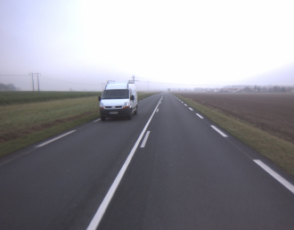
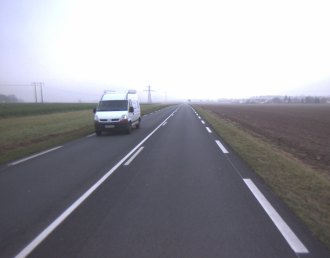
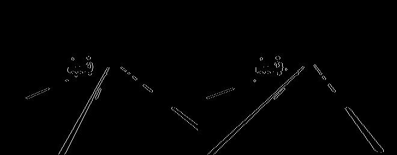
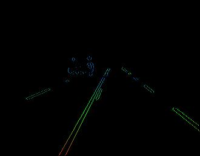
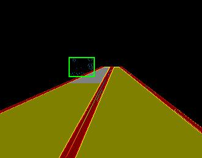
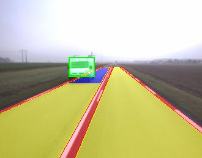

par stéréovision
Les images initiales :


Filtrées par ouvertures/détection de bord, fig. v-disparité :

Représentée dans l'espace de Hough pour déterter la ligne des marquages et puis décider de l'obstacle :
(Gauche : dans le cercle rouge, la ligne projetée dans l'espace de Hough comme le point)
(Droite : la ligne rouge représente les marquages et la carrée verte représente l'obstacle déterté)
Disparitée colorée et représentation des marquages et de l'obstacle :
(Gauche : rouge -> blue, proche -> loin )
(Droite : zone rouge : marquage, zone jaune : route, zone griss : route occupée, carrée verte : obstacle)


Le résultat final :
